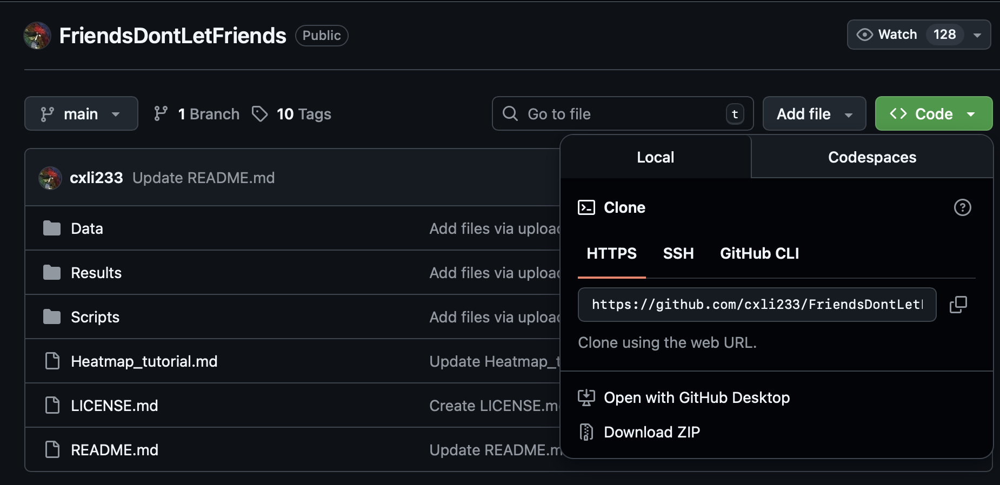
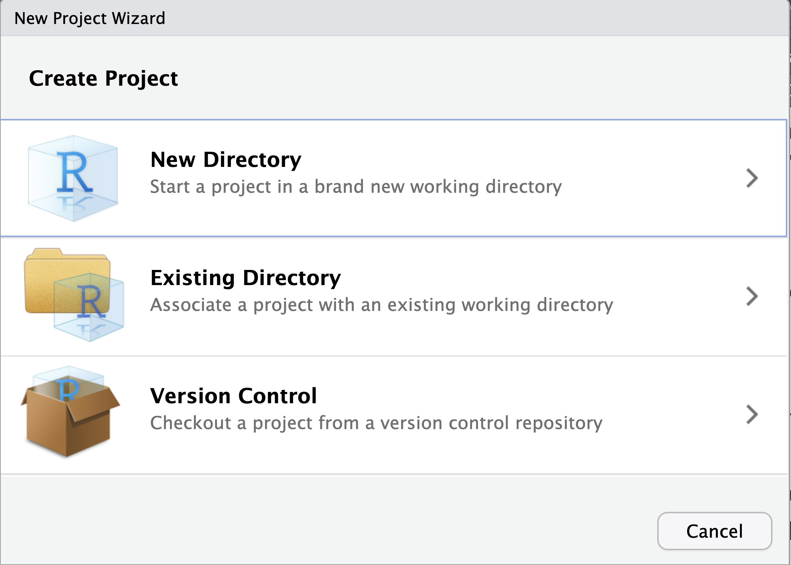
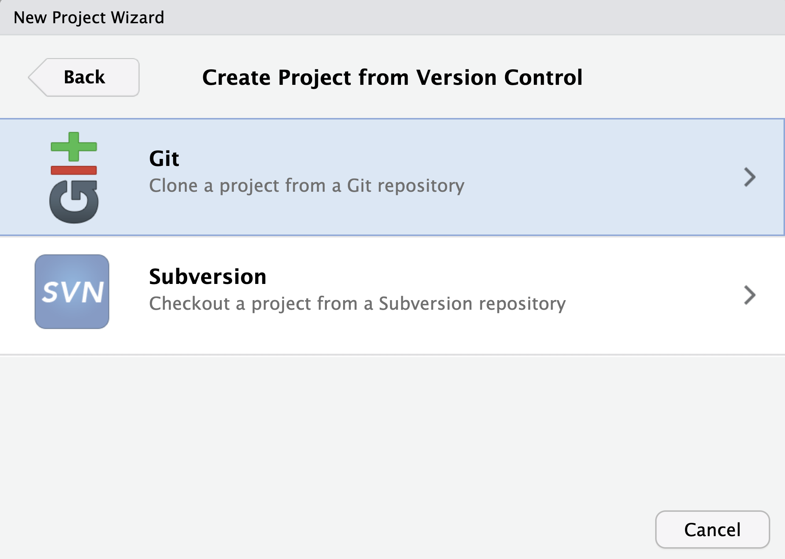
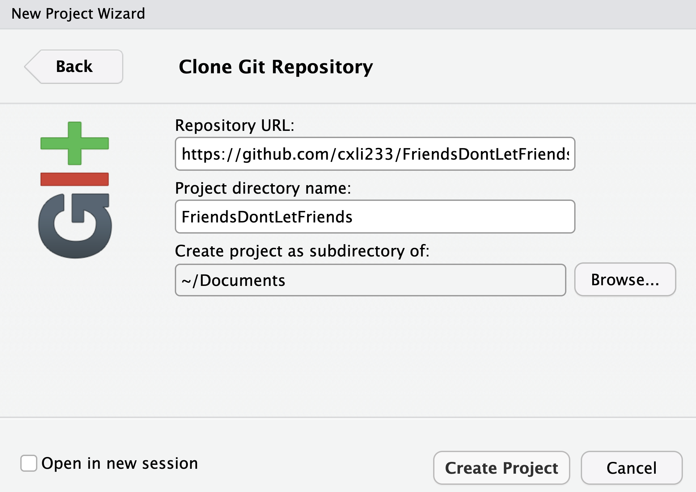
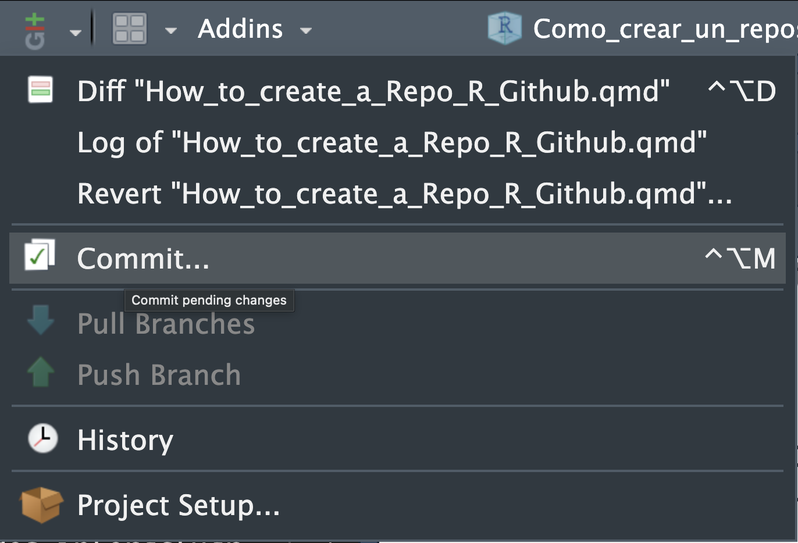

File → New Project → Existing DirectoryCómo crear un repositorio de Github
1 Git y Github
Git es un sistema de control de versiones que permite a lxs desarrolladorxs rastrear cambios en su código a lo largo del tiempo. GitHub es una plataforma basada en la web que utiliza Git para alojar repositorios de código, facilitando la colaboración entre desarrolladorxs.
En este tutorial vamos a explorar, paso a paso, las tareas esenciales para trabajar con Git y GitHub desde R. Veremos cómo:
- Clonar un repositorio de remoto en R desde GitHub
- Crear un repositorio directamente en tu equipo
- Configurar R para conectarse sin problemas con GitHub
- Subir tu proyecto local a un repositorio remoto
La idea es que al final puedas manejar sin dificultad el flujo básico de trabajo entre RStudio, Git y GitHub.
2 Clonar un repositorio remoto en R desde GitHub
Clonar un repositorio significa copiar a tu computadora todo el proyecto tal como está alojado en GitHub: sus carpetas, código, datos, documentación y cualquier otro archivo. Es el primer paso para poder ejecutar el código localmente, hacer cambios o usarlo como base para tu propio trabajo.
Este proceso es muy común en análisis de datos, cursos de programación o proyectos colaborativos. De hecho, muchos repositorios de clase, talleres, proyectos de investigación o ejemplos en R están disponibles públicamente en GitHub y pueden ser clonados libremente.
Por ejemplo, en mi perfil de GitHub hay varios repositorios públicos con análisis y scripts en R que puedes descargar y usar.
Para clonar un repositorio desde GitHub solo necesitas tener RStudio instalado y una conexión a internet.
2.1 Paso 1: Entra al repositorio en GitHub
Navega al repositorio que quieres clonar.
Una vez dentro, ubica un botón verde que dice Code y haz clic en él.
Se abrirá un menú con varias opciones. La que necesitamos es la que aparece arriba del texto “Clone using the web URL”.
Ahí verás un enlace del tipo:
https://github.com/usuario/repositorio.gitCopia esa dirección, porque la usaremos enseguida en RStudio.

2.2 Paso 2: Abre RStudio y selecciona Version Control
En RStudio ve a:
File → New Project → Version Control → Git
Selecciona Git y se abrirá una nueva ventana.

Aparecerá una ventana con un campo llamado Repository URL. Pega ahí la liga que copiaste desde GitHub.

RStudio rellenará automáticamente el nombre del proyecto y te permitirá elegir la carpeta donde quieres guardar la copia local del repositorio.
2.3 Paso 3: Elige la ubicación en tu computadora
Selecciona una carpeta donde quieras que viva tu proyecto. Por ejemplo, podrías tener algo como:
/Documentos/Rprojects/ Cuando estés conforme con la ruta, haz clic en Create Project. En ese momento, RStudio descargará (clonará) todo el contenido del repositorio y lo abrirá como un proyecto completo, listo para usarse.
2.4 Paso 4: Revisa el repositorio local en RStudio
Una vez clonado, en el panel de archivos de RStudio verás todo lo que el repositorio contenía en GitHub: scripts .R, archivos .Rmd o .qmd, datos, carpetas, imágenes, etc. Además, aparecerá la pestaña Git, donde podrás:
- Ver qué archivos han cambiado
- Registrar cambios (commits)
- Sincronizar con
GitHub(pull/push)
¿Qué puedes hacer ahora que ya lo clonaste?
Al tener una copia local del repositorio, puedes:
- Ejecutar el código tal como está Modificarlo y guardar tus propias versiones
- Crear ramas (branches) para experimentar sin romper la versión principal
- Contribuir al proyecto original haciendo pull requests
- Usarlo como plantilla o punto de partida para tus propios análisis
Clonar es el punto de entrada para aprovechar el ecosistema colaborativo de GitHub desde RStudio.
3 Crear un repositorio directamente en tu equipo
Cuando trabajas en un proyecto de análisis, modelado o procesamiento de datos en R, necesitas una forma ordenada de respaldar tu progreso y registrar los cambios que realizas. Para eso sirve Git : te permite llevar un control de versiones de tu proyecto, volver atrás cuando algo falla, recuperar archivos borrados y documentar tu avance de forma natural.
A continuación aprenderás a configurar un repositorio local usando Git, RStudio y el paquete {usethis}.
3.1 Instalar Git
Lo primero es asegurarte de que tu computadora tiene Git instalado.
En muchos sistemas ya viene incluido. En caso contrario, descárgalo desde:
3.2 Instalar el paquete {usethis}
El paquete {usethis} facilita muchas tareas que normalmente serían manuales y tediosas al configurar Git y GitHub desde R.
Instálalo con:
#| eval: false
install.packages("usethis")3.3 Crear un repositorio local
Antes de inicializar Git, tu proyecto debe estar dentro de un RStudio Project.
Si aún no es así, crea uno desde:
o
File → New Project → New DirectoryUna vez adentro del proyecto, ejecuta:
#| eval: false
usethis::use_git()R te preguntará si deseas hacer un primer commit. Un commit es una confirmación del estado actual de tu proyecto: guarda todos los archivos tal como están en ese momento. Este commit inicial marca el punto de partida del repositorio.
3.3.1 Hacer commits conforme avanzas
Cada vez que modifiques tu código, agregues datos, crees funciones o avances en tu proyecto, conviene registrar ese progreso con un commit. Esto te permite mantener un historial claro y recuperable. Puedes hacer commits desde:
- El panel
GitdeRStudio(forma interactiva). - La
Terminal, usando comandos deGit.
3.3.1.1 Hacer commits desde el panel Git en RStudio
En la barra superior de RStudio, haz clic en el icono Git y selecciona Commit.
 Se abrirá una ventana con:
- Los archivos nuevos o modificados.
- Casillas para elegir qué archivos incluir (stage).
- Un cuadro para escribir el mensaje del commit.
- El botón
Commitpara confirmar los cambios.

El mensaje debe describir claramente qué hiciste: te ayudará a identificar el commit más adelante.
3.3.1.2 Hacer commits desde la Terminal
En la pestaña Terminal de RStudio, puedes interactuar directamente con Git:
Agregar todos los archivos nuevos o modificados al stage:
#| eval: false
git add .Crear el commit con un mensaje:
#| eval: false
git commit -m "Descripción del cambio"Revisar el estado del repositorio:
#| eval: false
git statusUsar la Terminal es útil si quieres trabajar con Git de manera más profunda.
Pega el token cuando te lo pida. Con esto, tu computadora queda autorizado para comunicarse con GitHub.
4 Configurar R para conectarse sin problemas con GitHub
Finalmente, debes registrar tu nombre de usuario y correo asociado a GitHub. Esto asegura que tus commits tengan tu identidad y no aparezcan como “desconocidos”.
En R, ejecuta:
#| eval: false
usethis::create_github_token()Este comando abrirá una página de GitHub donde podrás generar un token personal de acceso. Un token funciona como una contraseña especial: es único, privado y mucho más seguro que usar tu clave real de GitHub, ya que permite autorizar tu computadora sin exponer tu contraseña.
Una vez creado, copia el token inmediatamente. Solo podrás verlo esa vez, así que conviene usarlo en el siguiente paso sin demora.
Luego, ejecuta:
#| eval: false
gitcreds::gitcreds_set()Pega el token cuando te lo solicite. Con eso, tu computadora queda autorizada para conectarse a tu cuenta de GitHub.
Finalmente, configura tu identidad en Git.
Ejecuta:
#| eval: false
usethis::use_git_config(
user.name = "tu_usuario",
user.email = "tu_correo@ejemplo.com"
)Reemplaza "tu_usuario" y "tu_correo@ejemplo.com" con los datos de tu cuenta de GitHub.
Con esto ya tienes un repositorio local completamente funcional y tu entorno configurado para trabajar con Git y GitHub desde R.
5 Subir tu proyecto local a un repositorio remoto
Si ya cuentas con un proyecto de RStudio que utiliza Git de forma local y quieres compartirlo en Internet, ya sea para respaldarlo o para que otras personas puedan consultarlo y reutilizarlo, puedes crear un repositorio remoto en GitHub. Este repositorio actuará como una copia vinculada a tu repositorio local: cada vez que actualices tu proyecto en tu computadora, podrás sincronizar esos cambios con GitHub, manteniendo ambas versiones alineadas.
Para crear el repositorio remoto desde RStudio, simplemente ejecuta:
#| eval: false
usethis::use_github()Este comando crea automáticamente un repositorio en tu cuenta de GitHub, lo conecta con tu repositorio local y sube todos los archivos y el historial de commits. Al finalizar, se abrirá en tu navegador la página del nuevo repositorio.
Una vez publicado, puedes compartir el enlace para que otras personas visiten tu código, lo clonen en sus propias máquinas o colaboren contigo. Es buena práctica incluir un archivo README.md en tu proyecto, ya que aparecerá como la descripción principal del repositorio y ayuda a quienes lo visiten a entender su propósito y contenido.
Ten en cuenta que los repositorios de GitHub son públicos por defecto. Si necesitas mantener tu código o datos en privado, puedes crear un repositorio privado ejecutando:
#| eval: false
usethis::use_github(private = TRUE)Esto asegurará que solo tú y las personas que autorices puedan acceder al contenido del repositorio.